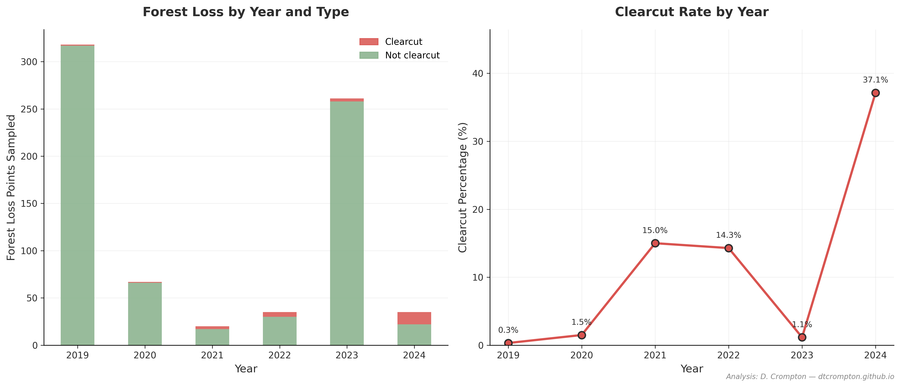
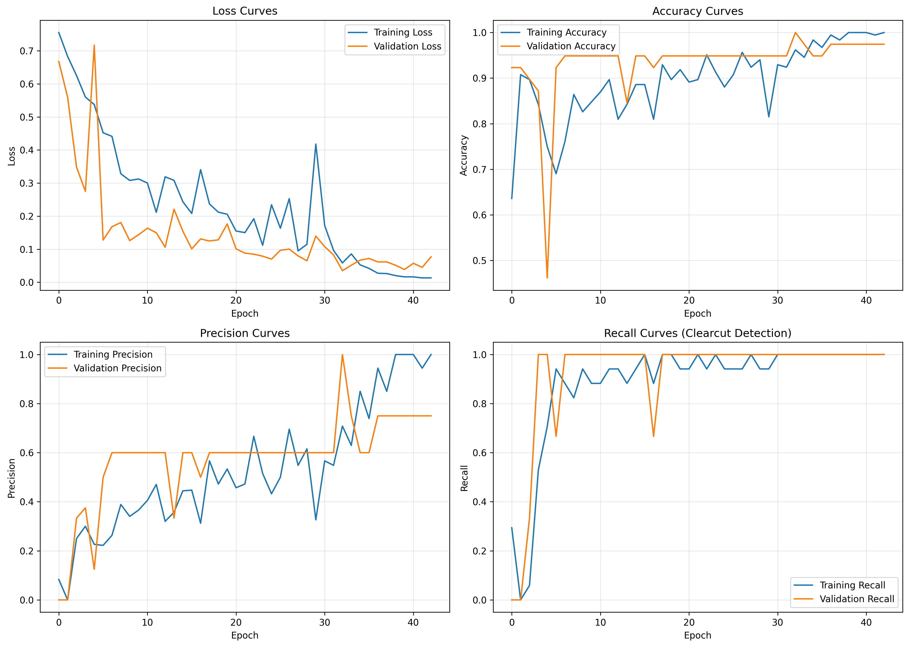
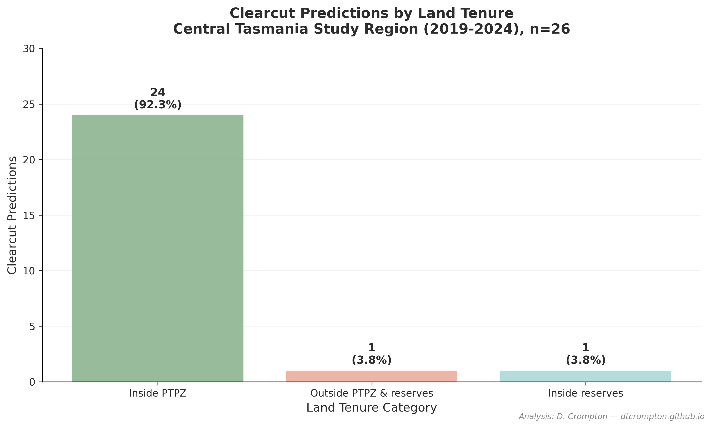

CNN-based classification of forest loss from Sentinel-2 satellite imagery
This project classifies forest loss events in central Tasmania using a convolutional neural network trained on Sentinel-2 satellite imagery, distinguishing clearcut logging from fire-driven loss. Predictions are cross-referenced with land tenure boundaries to identify spatial patterns and flag potential violations in protected areas.
Fire, not logging, dominates forest loss in central Tasmania.
Only 3.5% of detected forest loss (26 of 736 patches) was clearcut logging. The remainder was predominantly fire-driven, particularly from the 2019 and 2023 bushfire seasons. This suggests fire management — not logging enforcement — should be the priority for forest protection in this region.
2024 shows a concerning spike: Clearcut rate jumped to 37% in 2024, compared to less than 2% in fire-heavy years (2019, 2023). This indicates recent logging activity has increased significantly.
Spatial distribution aligns with permitted zones: 96% of predicted clearcuts (25 of 26) fall within PTPZ (Private Timber Reserve Zones) where logging is permitted. Only 1 clearcut was detected in protected reserves, flagged for further investigation.

Forest loss by year and type (left) and clearcut percentage trend (right) — 2024 shows 37% clearcut rate
Sentinel-2 Level-2A imagery (10m resolution) was exported from Google Earth Engine for the study region (145.5–146.5°E, -43.2 to -42.2°S). Annual composites (2019–2024) were generated using cloud-masked median values from growing season months (October–March).
Forest loss points were sampled from Hansen Global Forest Change v1.12, filtered to 2019–2024. Land tenure boundaries (PTPZ and reserve estate) were downloaded from Tasmania LIST.
A simple 3-layer convolutional neural network was trained to avoid overfitting on the small dataset (263 samples). The architecture uses progressively deeper filters (32→64→128) with max pooling, followed by a dense layer with 50% dropout and sigmoid output for binary classification.
The training set had a severe 10:1 imbalance (239 not-clearcut vs 24 clearcut samples). This was addressed using balanced class weighting, which penalises misclassification of the minority class (clearcut) by ~10×during training. This forces the model to learn clearcut features rather than predicting "not-clearcut" for everything.
Key technical challenge: Distinguishing geometric clearcut boundaries from irregular fire scars in satellite imagery when both cause complete canopy loss. The model learned to detect rectangular logging patterns versus fire's topography-following boundaries.

Training and validation curves — no divergence indicates the model is not overfitting despite small dataset
Test set performance (n=40, 4 clearcut samples): 100% precision, 100% recall, F1=1.0. However, this high performance is statistically fragile due to the small test set.
Manual validation provides more robust metrics: 12 high-confidence clearcut predictions were manually reviewed, achieving 83% precision (10 correct, 2 false positives). The 2 incorrect predictions were fire/natural loss with irregular boundaries that resembled clearcuts.

Spatial distribution of clearcuts — 96% in PTPZ (permitted), 4% in reserves (1 flagged violation)
Predictions were cross-referenced with land tenure boundaries using GeoPandas spatial joins. Each loss point was categorised as inside PTPZ, inside reserves, or outside both categories.
Finding: Almost all predicted logging occurs within permitted zones, suggesting compliance with Tasmania's forestry regulations in this study region. The single flagged clearcut in a protected reserve warrants ground-truthing to confirm whether it represents a genuine violation or a model false positive.
Interactive exploration: The web map allows users to toggle layer controls, click markers for prediction details, and filter by land tenure category.
Open to collaboration on environmental data science projects and actively seeking opportunities in geospatial analysis and remote sensing